Wordmark - The Primary Logo

All visual guides and assets for the new brand.
Wordmark - The Primary Logo
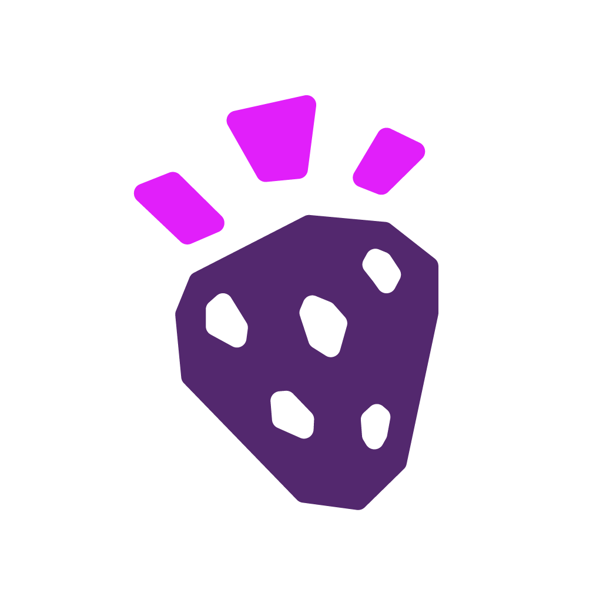
Icon - Secondary Logo
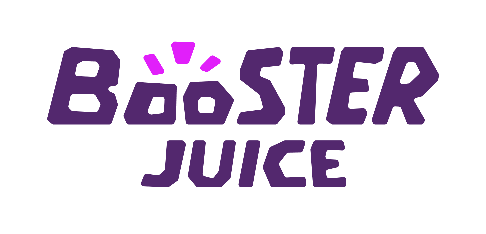
Full Wordmark - Secondary Logo
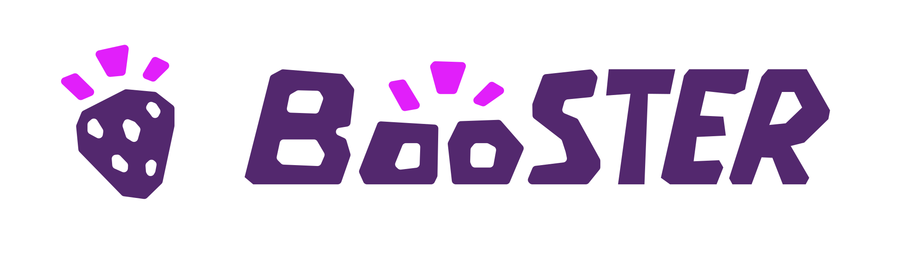
Wordmark + Logo
Used as a secondary logo, primarily for company assets such as posters, advertising, and branded communications.
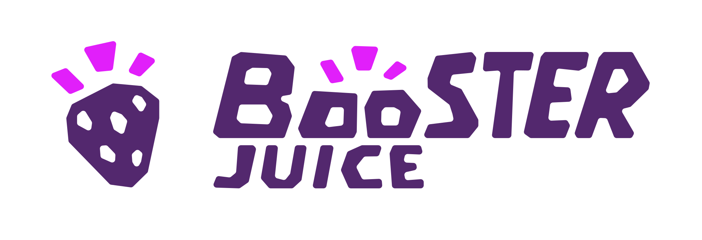
Full Wordmark + Logo
Used as a tertiary logo for internal documents, formal company materials, and rare private-facing contexts.
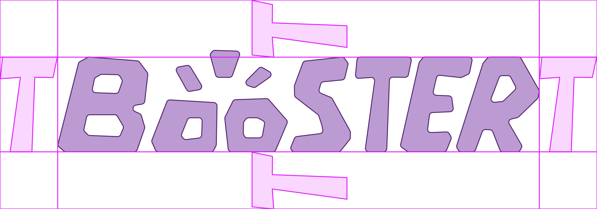
The T Guide
Use the T from the main Booster wordmark as the safe-zone unit. No other graphic, type, image, or interface element should enter this area.
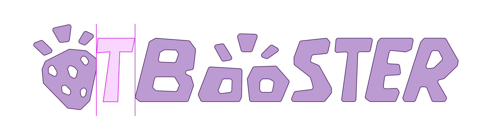
Spacing Method
Use the same T unit for lockup spacing, partner marks, QR-code pairings, and special-use logo combinations.
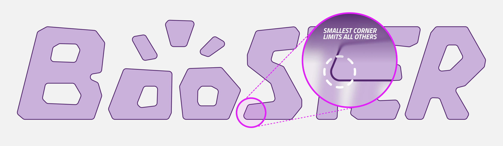
"S" Vertex Limit
All Booster logos and wordmarks should always use the highest corner radius possible, based on the vertex limits at the bottom of the "S". As the tightest corner across Booster elements, these vertices set the rounding limit for all logo geometry. At 100% scale, the maximum possible radius on the bottom corner of the S is 0.15". Other corners and elements can be much rounder, but all rounding is limited by the smallest corner of the S.
Core Logo Colours
The logo should appear only in core colours or greyscale. Use the interface below to preview approved background, logo, and emphasis states. Invalid low-contrast combinations are disabled by configuration.

Minimum Reproduction Sizes
Main logo minimum: 1.25" wide. Extended wordmark lockups minimum: 1.5" wide. For content under these sizes, use the strawberry logo or Boo symbol as representation.

The Exclamation Mark
The three blocks carry boost and energy across icons, Boo moments, and small interactions.
Boo
Boo handles expression across assistance, checkout, empty states, loading, and service moments.

Fruits
Fruit assets support packaging, icons, and campaigns with restrained exclamation integration.
Boo Expression Sheet Needed
Approved happy, helpful, empty, loading, error, and recovery expressions for digital assistance.
Expanded Fruit Library Needed
Geometric fruit assets with restrained exclamation integration for packaging, icons, and campaigns.
Do not alter proportions, colour, contrast, spacing, orientation, effects, or asset relationships. These examples should become approved visual misuse exports later.
Colour At Booster
The palette is deliberately tight. Purple carries the brand system while photography and real product colour provide richness.
Screen Vs Print
Neon and lilac perform best on screen. In print, use them as controlled accents or replace large applications with Booster Purple, Deep Purple, white, or greyscale surfaces.
Photography As Colour
When non-purple colour enters the system, it should primarily come from smoothies, ingredients, people, and real environments. Brand graphics should stay restrained so natural product colour can lead.
The Booster type system is built on two functional pillars: Montserrat for display and body, and Titillium Web for structural labeling. Together, they create a transparent, high-fidelity experience.
Primary Display (Montserrat Light)
Structural Label (Titillium Web Bold)
Product Identification & Metadata
Body Copy (Montserrat Light)
The identity system is designed to provide clarity and utility. We reduce promotional noise and replace it with direct, source-based information that makes decision-making faster and more intuitive for every guest.
Packaging is the most visible everyday brand touchpoint. It must support product colour, routine use, material clarity, disposal behavior, and recognition across cups, wrappers, bags, napkins, merch, and delivery moments.
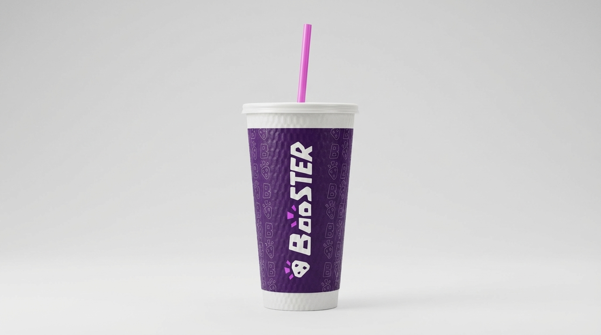
Cups
Transparent or frosted bodies let smoothie colour become the hero.
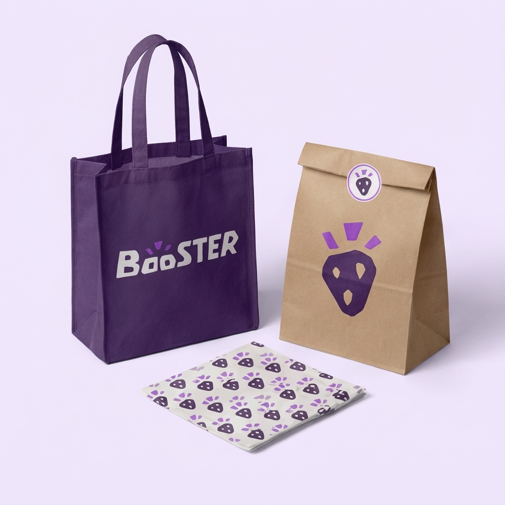
Wrappers
Use high-contrast lockups, clear ingredients, and material guidance.
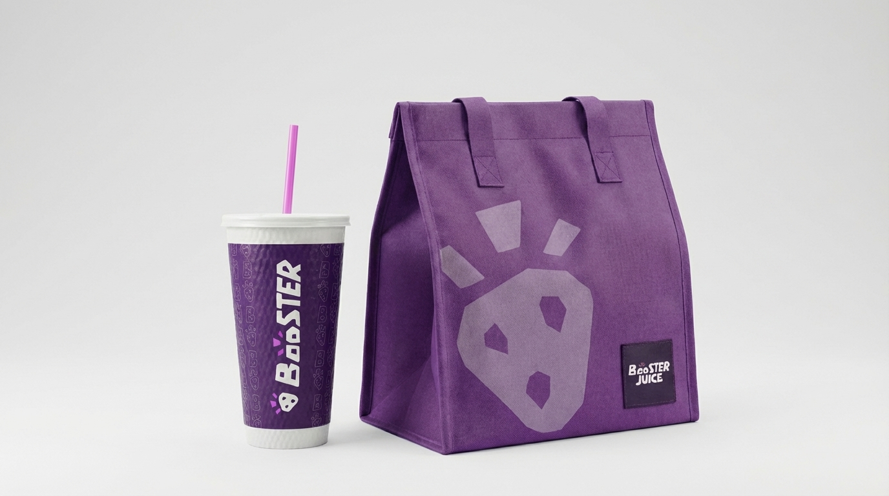
Takeaway
Consistent application across delivery and transport touchpoints.
Cups
Prioritize transparent product visibility, compact marks, disposal instructions, and QR-led source information.
Wrappers
Keep hierarchy simple: product name, need state, ingredients, material cue, and mark.
Takeaway
Cutlery, paper bags, napkins, and straw packaging should use restrained purple, grey, and icon logic.
Merch
Reusable cups, totes, cooler bags, and apparel should use standalone marks and durable materials.
Napkin System Needed
Napkin, straw, and cutlery graphic rules.
Reusable Cup Specs Needed
Loyalty, material, and cleaning guidance.
Disposal Icons Needed
Clear recycle, compost, rinse, and landfill instructions.
Photography should feel real, warm, naturally lit, and useful. It should show daily routines, visible product colour, hands, packaging, and people interacting with the brand without heavy artificial staging.

Product In Hand
Simple, human, tactile, and routine-based.
Packaging Context
Show actual touchpoints instead of isolated renders only.
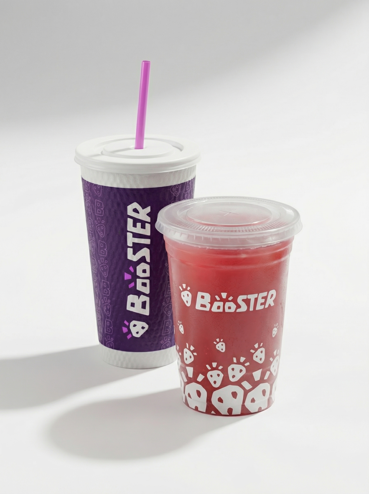
Colour Through Product
Let smoothie colour provide richness against restrained brand surfaces.
The icon system is currently in development. It will inherit the brand's heavy geometry and exclamation-block logic for app navigation, signage, and utility labeling.
Complete App Library
Navigation, account, rewards, cart, and nutrition labels.
Packaging Symbols
Material sorting, pickup, freshness, and allergen instructions.
Signage Set
Facility, pathfinding, and operational instructions.
Advertising should feel direct, benefit-led, visually rich, and controlled. Photography carries appetite and energy; typography carries the claim; the brand system holds the layout together.
Poster Design
Use one dominant image, one headline, one proof point, one CTA, and a clear lockup.
Email Design
Lead with the need state, show product colour quickly, keep CTAs specific, and avoid stacked promotional noise.
Flyers
Prioritize local relevance, offer clarity, and practical details like location, time, and product category.
Do
Use clear hierarchy, generous negative space, disciplined colour, one hero image, one campaign accent, and proof-based copy.
Avoid
Avoid multiple accent colours, overloaded fruit graphics, decorative Boo use, crowded offers, low-contrast CTAs, and generic wellness headlines.
Interface design should make decisions faster. The digital system should support clearer need-state browsing, transparent ingredient detail, faster reordering, material/sourcing education, and consistent brand behavior across web and app.
Colour
Use deep surfaces for focus moments and white/grey surfaces for reading-heavy flows.
Typography
Use Montserrat for screen hierarchy and Titillium labels for controls and metadata.
Components
Keep controls rounded, direct, high-contrast, and layout-stable.
Motion
Use quick reveals, state transitions, and progress feedback. Avoid playful bounce effects.
Interface Context
Photography should drive the interface, supported by clean, modular layout structures.
Website Standards
Use the same modular rhythm as this guideline site: bold section headers, soft cards, restrained colour, clear captions, and direct paths into deeper content.
Website Templates
Homepage, menu, sourcing, product detail, and sustainability page patterns.
Component Library
Buttons, toggles, cards, forms, drawers, alerts, and navigation states.
App Icon Exports
Home screen, favicon, PWA, and notification icon files.
{kind=link}
{kind=link}
{kind=link}